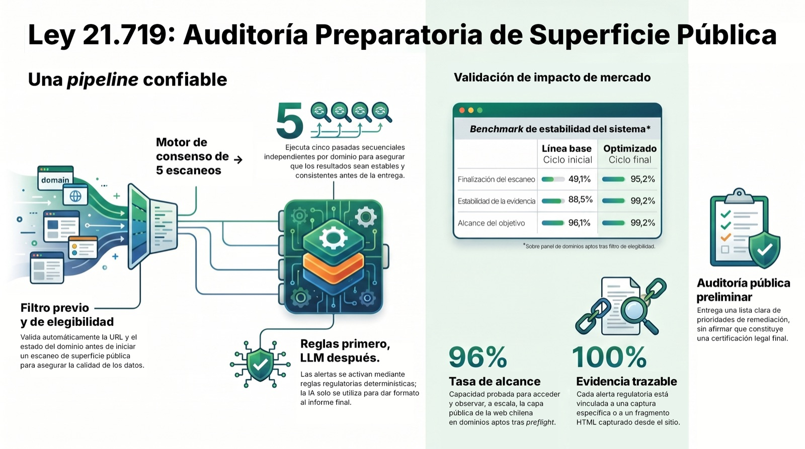
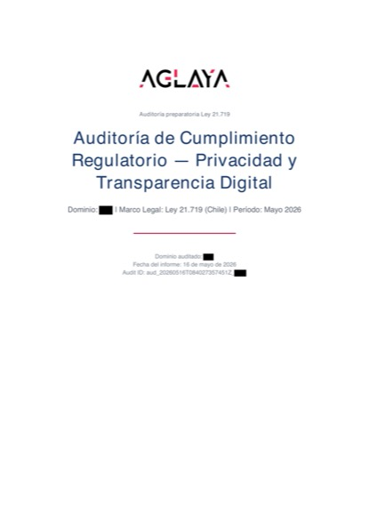

Scanner Ley 21.719
RegTech preliminar para auditar la capa pública de webs chilenas bajo la nueva Ley de Protección de Datos. Operado por AGLAYA.

El problema
Las empresas chilenas necesitan auditar su exposición pública bajo la nueva Ley 21.719 sin contratar consultoría artesanal cara ni esperar tres semanas a un humano. Las opciones reales hoy son cuatro:
- Revisar todo a mano — lento, costoso en tiempo interno y propenso a errores.
- No revisar nada y afrontar las multas cuando lleguen.
- Pagar abogados, generalmente por hora y a tarifas que pocas pymes se pueden permitir.
- Usar herramientas genéricas que no entienden el marco regulatorio chileno y no generan evidencia trazable.
El Scanner 21.719 se lo pone mucho más fácil.
Cómo funciona
El producto recibe una URL pública. Antes de ejecutar el escaneo completo, un módulo de preflight verifica automáticamente que el dominio sea accesible desde Chile, que no esté bloqueando automatización, que resuelva a una IP pública válida y que tenga contenido web relevante bajo el ámbito de la Ley 21.719. Si no pasa, el cliente es notificado de inmediato y sin coste. Si pasa, arranca el motor real.
Input
elegibilidad
de consenso
consenso
deterministas
API
El motor de escaneo ejecuta cinco pasadas de consenso independientes sobre el mismo dominio en contextos Playwright aislados, orquestadas desde el async loop del worker RQ. Cada pasada visita el sitio desde cero, captura el HTML completo de la página principal y las páginas de política, detecta las cookies emitidas antes y después de interacción, e identifica formularios, banners de consentimiento y cualquier carga de recursos externos. Esa captura se analiza con el motor de reglas regulatorias deterministas: 12 controles versionados en matrix_v1.json (con control_id, base_legal, obligacion, severidad_inicial) sobre los vectores de exposición de la Ley 21.719.
Con los cinco análisis completados, el motor de consenso compara resultados ejecución por ejecución. Solo pasan al informe las alertas que aparecen en cuatro o cinco de las cinco ejecuciones. Lo que no alcanza ese umbral se descarta — variabilidad de red, contenido dinámico o artefactos de timing quedan fuera. Sin consenso, no hay alerta.
Input
control_id · variabilidad descartada
El motor de reglas se compone de dos servicios separados: Rules Engine (interpreta cada captura contra el catálogo regulatorio) y Control Matrix (mapea hallazgos a controles auditables). Ambos consumen la Matriz Normativa v1 — el catálogo de checks deterministas mantenido como dato versionado, no como código incrustado. Sobre ese mismo modelo opera la capa de scoring y semántica de cada alerta.
Reglas primero, LLM después
La IA no decide qué es alerta. Eso lo hacen las reglas regulatorias deterministas — trazables, auditables, repetibles. Claude entra únicamente al final, para compilar la evidencia recopilada y redactar el informe en lenguaje comprensible. Cada alerta queda anclada a un fragmento HTML capturado del sitio real, serializada contra el contrato versionado scan_v1.schema.json y archivada como scan_v1.json. El informe final cumple report_v1.schema.json. Schema-first, no improvisación. El operador puede leer, citar o disputar cada nodo de evidencia.
Estado real
- v0.1.1Release controlada, abierta a tráfico externo desde el 18 de mayo de 2026.
- ~760 testsSuite de pytest extensa pasando localmente. Cero fallos en último run.
- Sin deuda de seguridadRevisión externa completa: vulnerabilidades críticas, altas, medias y bajas — todas cerradas antes del lanzamiento.
- 72.8% / 100%Preflight scan-ready / evidencia trazable por alerta (todo finding viene anclado a uno o más control_id de matrix_v1.json).
- 90.2% / 99.0%Tasa de finalización del escaneo en dominios pre-filtrados por preflight (n=716, sin partials / incluyendo partials).
- Consenso 4/5Cinco pasadas independientes en contextos Playwright aislados; alerta solo si concuerdan al menos cuatro.
- < 3 minDe checkout a informe editorial PDF en el correo (estimado conservador; scan p95 75s, n=1868).
- Railway + NetlifyBackend con workers Redis / frontend edge / pagos Lemon Squeezy.
- 17 auditsRevisión cruzada Sistema → CRM (mayo 2026). Cada caso trazable, cada handoff documentado.
- 5 postmortemsCasos reales cerrados (3 con cliente nombrado, 2 internos PR37/PR38). Cultura de fix + aprendizaje, no de ocultar.

Frontera honesta
Lo que el producto no hace, explícito en cada superficie comercial:
- No certifica cumplimiento automático.
- No emite opinión jurídica definitiva.
- No promete cumplimiento integral.
Lo que sí entrega: una primera auditoría preparatoria repetible, vendible y defendible. La primera capa de debida diligencia que toda empresa chilena debería tener antes de hablar con su abogado.
La frontera no es marketing defensivo. Es activo competitivo: las herramientas que sí prometen certificación quedan expuestas el día que falla un caso.
Autoridad temática + contenido publicado
El producto no se sostiene solo en el código. Tiene una capa editorial pública que construye autoridad temática sobre Ley 21.719 y precede al checkout:
- Blog técnico Ley 21.719 Línea editorial sostenida en español sobre cumplimiento, preparación y diagnóstico bajo la nueva ley chilena.
- Estudio: 7 brechas en 17 webs chilenas Análisis de campo con datos reales del propio motor del Scanner. Proof social cuantitativa.
- ¿Cuánto cuesta prepararse para la Ley 21.719? Pieza de educación de mercado conectada al embudo de pricing.
- Diagnóstico gratuito vs. informe técnico Frontera entre preflight sin coste y producto pagado, explicada para no-técnicos.
- Landing Meta Ads → Auditoría Ley 21.719 Pieza de captación activa, conectada al motor de preflight + checkout en producción.
El playbook Paid Ads (Meta mayo + Google junio 2026) opera sobre esta capa editorial. No es funnel ciego — es funnel respaldado por contenido publicado.
Lo que este proyecto demuestra
-
Full-stack senior
Backend Python, frontend HTML/JS plano, Playwright headless en async loop del worker RQ aislado del API vía
worker.py, Redis+RQ para job queue persistente, SQLite operacional, pagos Lemon Squeezy con webhook idempotente (claim_webhook_event), edge Netlify, despliegue continuo en Railway. -
De panel nocturno a producto en semanas
El proyecto arrancó como un panel de investigación nocturno: 1.000 dominios escaneándose cada noche para afinar el motor de reglas. El punto de inflexión fue una decisión de arquitectura no obvia — comprimir ese bucle de validación hasta ejecutar 5 pasadas independientes sobre cada dominio en cada auditoría individual y añadir un motor de consenso sobre los resultados.
Lo que podían haber sido meses de iteración hasta alcanzar robustez estadística pasó a semanas de desarrollo — y a un producto comercialmente lanzable con estadísticas más sólidas que cualquier pasada nocturna.
-
Decisiones de arquitectura defendibles
«Reglas primero, LLM después» — trazabilidad gana a generación. Single
mainbranch — velocidad gana a workflow ceremonioso. Consenso de 5 ejecuciones por escaneo — confianza gana a velocidad cruda. -
Seguridad como capa, no afterthought
Auditoría externa de seguridad completa: todos los hallazgos críticos, altos, medios y bajos cerrados antes del lanzamiento, más cinco hallazgos detectados tras la apertura a tráfico externo. SSRF hardening con denylist + IDN normalization + reverificación de redirects. Rate limiting Redis con script Lua atómico (correcto multi-worker). Atomicidad como patrón: tres operaciones críticas (
claim_webhook_event,save_initial_record,validate_and_use) implementadas como atómicas con PK constraints o scripts Lua. IP allowlist sobre webhooks de Lemon Squeezy con test dedicado. Headers HTTP completos (HSTS, CSP, X-Frame-Options, Permissions-Policy). -
RegTech vertical real
Dominio Ley 21.719 + producto + go-to-market. No es un PoC: posicionamiento Obviously Awesome documentado (puntuación 6.9/10), mensajería StoryBrand aplicada, Jobs-To-Be-Done formalizados, pricing vigente y oferta comercial separados como documentos, análisis competitivo nombrado (C-ONLINE) y referencias de categoría/adyacencia. Embudo público controlado
landing → preflight → checkout → consenso → entrega. Privacy Policy versionada con changelog (v1.2 → v1.3) — compliance tratada como producto, no como afterthought. -
Operación end-to-end de founder
Producto + landing comercial + landing para agencias + documentación pública + blog técnico + Meta Ads (Pixel + CAPI server-side) + video promocional con avatar IA + checkout Lemon Squeezy + entrega editorial + booking comercial (Cal.com con webhook propio) + soporte. Una persona, un repo, un
main. AGLAYA como operador comercial. -
Disciplina contractual + schema-first
Contratos JSON Schema versionados (
scan_v1.schema.json,report_v1.schema.json) como interfaz formal entre captura, motor de consenso, motor de reglas y generación de informe. Invariantes críticas del sistema enumeradas en documentación operativa. Protocolo post-deploy formalizado por release. Postmortems documentados por caso. No es código que funciona — es código que se puede defender. -
Feedback loop D+7 con clientes reales
Plan de proof social activo: panel de feedback a 7 días desde la entrega (PR37), revisión cruzada Sistema → CRM sobre los audits emitidos, iteración del motor con datos reales del campo. No es build-and-pray.
Por dentro
Flujo público completo
La URL del cliente entra por la landing pública. El primer paso es siempre el preflight: el sistema comprueba automáticamente que el dominio existe, que es accesible desde Chile, que no está bloqueando automatización y que tiene contenido web relevante bajo el ámbito de la Ley 21.719. Si el dominio no pasa, el cliente recibe notificación inmediata y sin coste alguno.
Si pasa, se solicita el email de contacto y arranca el motor de escaneo. El worker RQ ejecuta cinco pasadas de consenso sobre el dominio, cada una en su propio contexto Playwright aislado dentro del async loop del worker. Cada pasada captura la capa pública visible: HTML, cookies emitidas, formularios, banners de consentimiento, políticas publicadas, recursos externos cargados. La captura se analiza con el motor de reglas regulatorias deterministas: 12 controles versionados en matrix_v1.json, cada uno con control_id, base_legal, obligacion y severidad_inicial. Sobre los hallazgos deterministas opera una capa semántica LLM para enriquecer evidencia y redactar.
Con los cinco análisis completados, el motor de consenso compara resultados. Solo consolida como alerta lo que aparece en cuatro o cinco de las cinco ejecuciones. Lo que no alcanza ese umbral se descarta — variabilidad de red, contenido dinámico, cookies bajo condiciones de carrera, artefactos de timing.
Alcanzado el consenso, el cliente recibe el enlace de checkout vía Lemon Squeezy. El pago activa la generación del informe: la evidencia consolidada en scan_v1.json entra a Claude, que la transforma en un informe editorial PDF con marca AGLAYA, audit ID trazable, fecha y versión del motor. El informe llega por email en minutos.
Caso excepcional: si el consenso no se alcanza — menos de cuatro de cinco workers coinciden en un resultado — el caso entra en revisión manual antes de emitir ninguna factura ni entregar ningún informe.
Stack y decisiones técnicas
Backend Python + FastAPI; routers separados para admin, audits, payments, feedback, contact, crm, health. Worker RQ aislado en proceso separado del API (vía backend/worker.py) con Sentry inicializado en arranque. Playwright corre en el async loop del worker, con _lock = Lock() per-process documentado como invariante crítica.
Job queue Redis + RQ; los resultados de consensus jobs quedan cacheados en Redis con TTL de 90 días — sobreviven a reinicios y redespliegues. SQLite para datos operacionales (checkout, pago, entrega), con guardrail explícito (_warn_if_sqlite_with_multi_worker) que advierte si la configuración no es compatible con escalado.
Endpoint /health con dependency check real: devuelve HTTP 503 si DB o Redis caen, no un 200 cosmético.
Frontend HTML/JS plano sobre Netlify edge. Sin framework JS — el formulario de captura son 50 líneas, no necesita React. Consent Mode v2 cargado antes que GA4. Cookies solo si el usuario consiente. Cloudflare Turnstile para bot detection sin fricción.
Pagos vía Lemon Squeezy con webhook protegido contra replay: claim_webhook_event(event_key) en backend/app/services/webhook_security.py devuelve False si el evento ya fue procesado (idempotency vía PK constraint). El sistema nunca cobra dos veces. IP allowlist sobre el webhook de Lemon Squeezy, verificada por test.
Integraciones server-side: Meta CAPI (meta_capi.py:send_event) para conversiones de Ads sin depender del pixel cliente; Cal.com (cal_bookings.py + cal_webhook) para gestión de reservas comerciales con su propio webhook idempotente.
Seguridad — qué se auditó
Auditoría externa de seguridad completa. Cerrados: todos los hallazgos críticos, altos, medios y bajos detectados antes del lanzamiento. Hotfixes operacionales adicionales aplicados tras la apertura a tráfico externo (Sentry reaper, observabilidad de panel, regresiones de MailerLite) — todos cerrados y documentados como postmortems. SSRF hardening (denylist de IPs privadas, normalización IDN/punycode, reverificación de redirects, variantes de hostname). RedisRateLimiter con script Lua atómico sustituye InMemoryRateLimiter — rate limiting correcto en multi-worker. Healthcheck real /health valida DB + Redis y devuelve HTTP 503 si algún crítico falla.
Único item abierto al cierre de auditoría: L2 (copy de correos con promo mayo — acción manual antes del 1 de junio). ~760 tests funcionales pasando localmente, cero deuda de seguridad abierta.
Postmortems en producción
El proyecto opera con disciplina formal de postmortem. Cada incidente con cliente real queda documentado: causa raíz, fix aplicado, aprendizaje arquitectónico, prevención. Casos cerrados a la fecha:
- 2hermanos.cl — dependencia de browser context; fix en aislamiento del worker.
- latinbugs.com — bug de template path en pipeline de informe.
- bakdesign.cl — worker OOM / stuck job; fix en gestión de memoria + timeout duro.
- PR38 (Sentry) — TypeError UTF-8 en capa de auth; fix con normalización de input.
- PR37 (Panel admin) — bloque Feedback D+7 colapsado vertical; fix de layout + invariante de observabilidad del panel.
Los postmortems alimentan las invariantes críticas del sistema, lista de propiedades que no pueden romperse en ningún deploy.
Panel admin + observabilidad operativa
Backoffice administrativo con endpoints operativos para revisión de audits, manejo de excepciones y gestión de feedback. El panel de feedback D+7 (PR37) captura señales de clientes a 7 días desde la entrega y alimenta el plan de proof social. Cada release pasa por protocolo post-deploy formalizado.
Observabilidad: Sentry inicializado en el worker RQ (_init_sentry_worker en backend/worker.py), captura de errores y trazabilidad de jobs. Healthcheck /health con verificación real de dependencias (devuelve HTTP 503 si DB o Redis fallan). Suite de tests dedicada (test_health.py) garantiza que la observabilidad no se rompe en silencio.
Operación comercial
v0.1.1 sostiene preflight gratuito + checkout para sitios aptos + 5 scans por consenso + entrega editorial PDF. Embudo controlado, no autoservicio masivo. Posicionamiento basado en framework Obviously Awesome (puntuación interna 6.9/10 — el cap está en validación comercial repetida, no en producto). Competencia identificada: revisión manual, no-consumo, consultoría artesanal, herramientas parciales sin marco chileno. Playbook Paid Ads documentado (Meta mayo + Google junio 2026). Marketing operativo: Meta Ads + landing + blog técnico + video promocional con avatar IA.